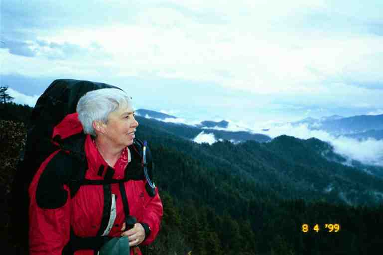
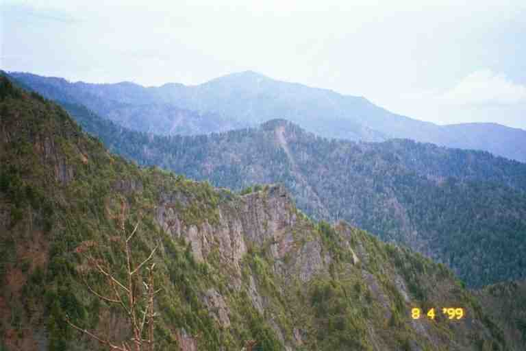
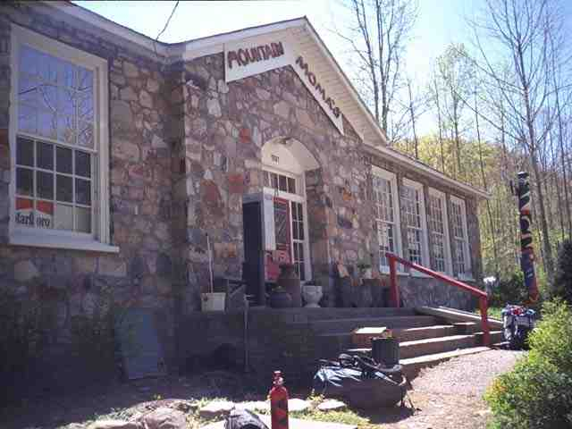

It was the morning of April 8 and we were ready to get back on the trail after a relaxing zero mile day in Gatlinburg. The trail out of Newfound Gap starts on the paved path leading from the parking lot to the washroom. A small plaque at the entrance near the parking lot gives tourists a little information about the trail.
The trail started out wide and the footing was easy, likely to accommodate Park tourists who would want to sample the trail. It wound its way around and slowly up the side of the mountain, and we were surrounded by a few families with excited young kids carrying day packs. The trail finally levelled out a little and we walked the ridge line until we reached Icewater Spring Shelter where we took a break. We then followed the rocky trail as it dropped sharply down a narrow ravine. There were no blazes for some time and we started to wonder if we were still on the trail. Luckily we finally found a blaze, because we would have hated to climb back up this trail. Then came a landmark known as Charlies Bunion. It is a high rock formation slightly off the trail, at the edge of a mountain. It projects out from the mountain, giving a spectacular view to those who wish to climb it and sit and enjoy. There was a drizzle falling at this point and we decided not to venture over, for fear of slick rocks.
The attached photo was taken not long after Charlies Bunion and hopefully gives a feel for the beautiful ridge walk we had the rest of the day in the light rain. The views were inspiring as can be seen from another picture taken in this area. We met an older gentleman doing some trail maintenance with a pair of clippers. He was trimming branches and plants encroaching onto the trail. He was wearing a rain suit and had his lunch in a day pack. He was taking his time and really enjoying his time in the mountains.


We were overtaken by Ridgerunner Chas and another ridgerunner. They were carrying a chainsaw and other equipment and were on their way to remove some blowdowns. When we mentioned our experience with blowdowns a few days before, they said that they were aware of it. They had not been able to attack the severe problem until now as they had just received special permission to bring a chainsaw to do some of the heavy clean-up. Normally the use of mechanized equipment in the park is limited to about a month per year, and hand saws must be used the rest of the time. Chas told us he had a great time the night before in a pub in Gatlinburg with some of our friends. He left us with a warning of a severe thunder and rain storm later in the day.
The closest shelter was Pecks Corner shelter, which was about a half mile off the trail down in a little valley. When we finally got to the side trail leading to the shelter, we felt that we were going to beat the storm. Just then, the skies opened up and the thunder intensified. The walk down into the valley was pretty easy but it never seemed to end, and we were getting soaked. We finally heard voices and noticed the roof of the shelter a little off the trail. When we came around to the front of the shelter, we were greeted by a boy scout troop.
Six boy scouts and three leaders were inside but there was lots of room in this two shelf shelter. Well, actually there was lots of sleeping room, but they had wet clothes and equipment strung all over the shelter. Some of our stuff soon joined theirs on the lines. We were soon joined by another thru hiker who introduced himself as SEABASS. We set up our stuff, prepared a meal and socialized.
This was day five of a camping week for this troop from South Carolina and it had rained every day. The boys were well behaved but you could see that they were getting restless. They wanted to talk about the trail and we obliged them. They were lots of fun. They said their troop leader was not with them because he was also thru-hiking this year. His name was GOOD SAMARITAN. They were leaving the trail the following day so they offered us some fuel. I topped up my bottle. A couple of the boys were in charge of fire and started a fire in the shelter's fireplace.
Someone had a trail guide which indicated that there was a noisy frog in a hollow log in front of the shelter. There was a large rotting log in front with a pool of water in the bottom. Sure enough, a loud croaking could be heard from the log. Boy, what an accurate guide book. I believe it was Wingfoot's Thru-Hikers Handbook which I will discuss later.
The next day was the best so far. There is no way I can do justice to it but here goes. The afternoon was sunny with cool breezes. The dirt path wandered up and down hills and in and out of the woods, all the time staying on the ridgeline. When it came into the open, the path snaked along the centre of a grassy ridgeline that was often no more than 10 feet wide. The slopes on both sides were covered with grass and low bushes giving us marvellous views of the mountain ranges on both sides. We stopped and took our breaks in these narrow open areas. The sun, the soft mountain breezes and the scenery was doing wonders for our spirits. We passed a triangular shaped area marked out with rocks imbedded in the ground. Some said it was a helicopter landing area. We also came to an area where we glimpsed a small amount of rusty debris, apparently the remains of a long ago plane crash. We did 13 miles, stopping for the night at Cosby Knob Shelter where everyone was talking about their wonderful day on the trail. This was our last night in the Smokies.
-----------------
Like most shelters in the park, there was no outhouse here. A sign pointed down a path to the toilet area. When you had a need, you made a quick head count, which could be a problem with the large crowds in the Smokies, and headed off down the path. As you got close to the toilet area, you made sure that you were not disturbing someone else and then found a private spot. We brought a little plastic trowel to dig a 6 to 8 inch deep cat hole but many simply used their boots or sticks to dig. The trick was then to position oneself so that everything ended up in the hole and nothing on your clothes which were down around your ankles. You then covered the hole.
At some of the shelters in the first section of the Smokies, i.e. the busiest section of the park, from Fontana Dam to Newfound Gap, the toilet sign pointed over the edge of the hill on one side of the ridgeline. (Another sign pointed to the water source down the hill on the other side of the ridgeline.) You had to go some distance down the slope for privacy. Part way down the hill in the toilet area, you would come to what many call a flower garden. Thousands use the area every year and some of them are lazy. They go only part way down the hill and do their business in a shallow hole or on the ground and cover it with a rock.. So what you see as you go down the slope is an area with toilet paper sticking out from the ground or from under rocks. From an ecological point of view, the cat hole method is the best way to dispose of human waste. However, because of the bad habits of some people, the park is slowly introducing privies to the shelter areas.
-------------------------The next morning we headed out and after 8 miles reached the eastern boundary of the park at Davenport Gap. Like most gaps, this one was still high up in the mountains. The trail crossed a road at this point but we first wanted to go to Mountain Momma's Kuntry Store which was about a mile and a half down the road to the east. We sat and had a little snack at the side of the road waiting for a ride but when none arrived we put our packs on and started down the road.
It was now past noon and the weather had turned hot. The little thermometer on my pack said low 80's. The road down the mountain was very steep with many switchbacks. The heat and the hard surface was having a toll on us. Eventually the road came out into a horse camping area. There were many small private fenced in fields where horse people park their vehicles and horse trailers. They hang out here before and after riding some of the designated horse trails in the Smokies. Some of the shelters in the Smokies are for use by hikers and horse riders and have hitching posts nearby.
We finally came to Mountain Momma's which is a famous oasis for thru hikers. Their cheeseburgers are legendary and had been a hot topic for the last few days on the trail. We took off our boots and socks, put on our sandals and went in and ordered cheeseburgers, and then waited outside in the shade on the stone steps for our food. SEABASS was here, having come down from the AT by a blue blaze trail which followed a stream. It would likely have been cooler than our road walk. He was trying to reach his girlfriend Aimee (pronounced Amy) on the phone. It seemed that he was always talking about Aimee. He worshipped her. I will tell some wonderful stories about that later.
We went back inside to buy a few packaged meals and snacks for the next few days. As usual we probably bought too much, because the trail town of Hot Springs NC was coming up in 35 miles. We then went to watch them finish cooking the burgers. The burgers being cooked on the grill looked really thick. The cook they kept pressing down on them with a heavy iron like tool, to remove the fat. When it was cooked, they put it in a large bun loaded with lettuce, onions, cheese and a thick tomato slice. We ate our burgers outside on the steps. It was as much a salad as it was a hamburger. Their reputation was well deserved.
This hiker oasis is situated on a quiet country road and carries a good selection of hiker type meals and lots of junk food and of course the burgers. We did not go out behind the store but we knew they had showers and a laundry and that there were bunkhouses back there with home made bunks and foam for mattresses. The descriptions we had heard were not appealing to us, although some hikers had a good time here.
We tore apart the packages of food we had purchased and repackaged it all in zip-loc bags. As we sat there, we noticed that there was more traffic than you would expect going in and out of this country store. The store's main reason for existence was cigarettes, which took up an enormous amount of the store space. Most of the entire portion of the building beyond the doorway in the attached picture was devoted to tobacco products. The store is situated in North Carolina right next to the Tennessee border. Because North Carolina has very cheap tobacco prices, there is a steady stream of traffic across the border to stores such as this one.
We were hoping to get a ride but none of the people we met offered and we did not ask. We discussed spending the night at a campsite back on the trail next to a river. SEABASS left and we followed not long after.
The walk back up the road to the trail was exhaustive and unbearably hot. After about 45 minutes we arrived back at the trail. We sat on our packs at the side of the road and took a break. Almost immediately a car pulled up and offered us a ride down to Mountain Momma's. We were unsure whether to laugh or cry. Just then a lucky thru hiker came out of the woods and jumped at the opportunity.
*************
The picture of Mountain Momma's was taken from BY THE NUMBERS' journal at http://www.trailjournals.com/. . There is a photo of the building taken from further away in ZIP DRIVE's journal at the same site. Click on journals at the site and then on view photos under his name to get an index of his photos.
